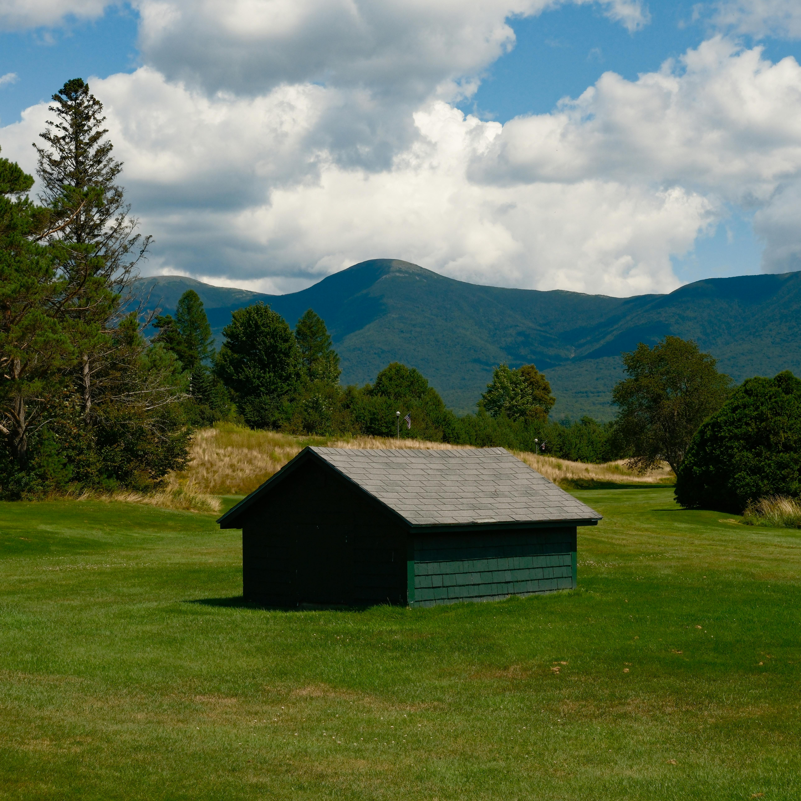
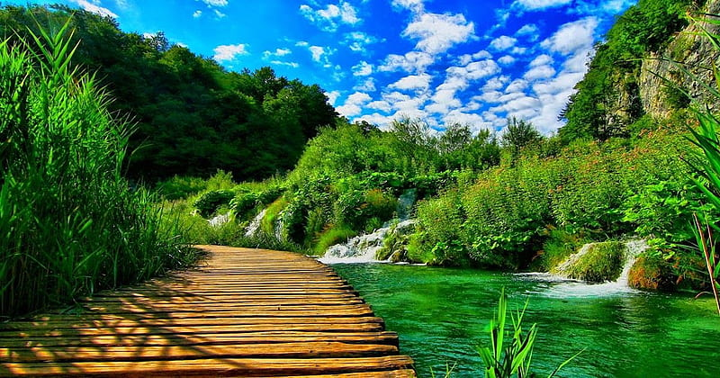
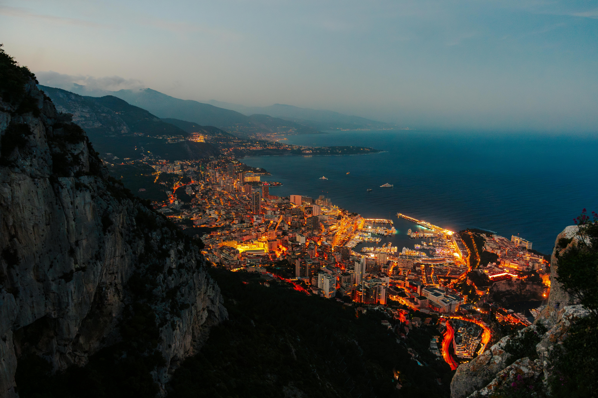

Galeri Foto



Fakta Alam
| Lokasi | Jenis | Keistimewaan |
|---|---|---|
| Bali | Padang Rumput | pemandangan yang damai |
| Sumatra | Hutan | Danau Bersih |
| Jawa Barat | Gunung | Pemandangan Indah |
| Lokasi | Jenis | Keistimewaan |
|---|---|---|
| Bali | Padang Rumput | pemandangan yang damai |
| Sumatra | Hutan | Danau Bersih |
| Jawa Barat | Gunung | Pemandangan Indah |